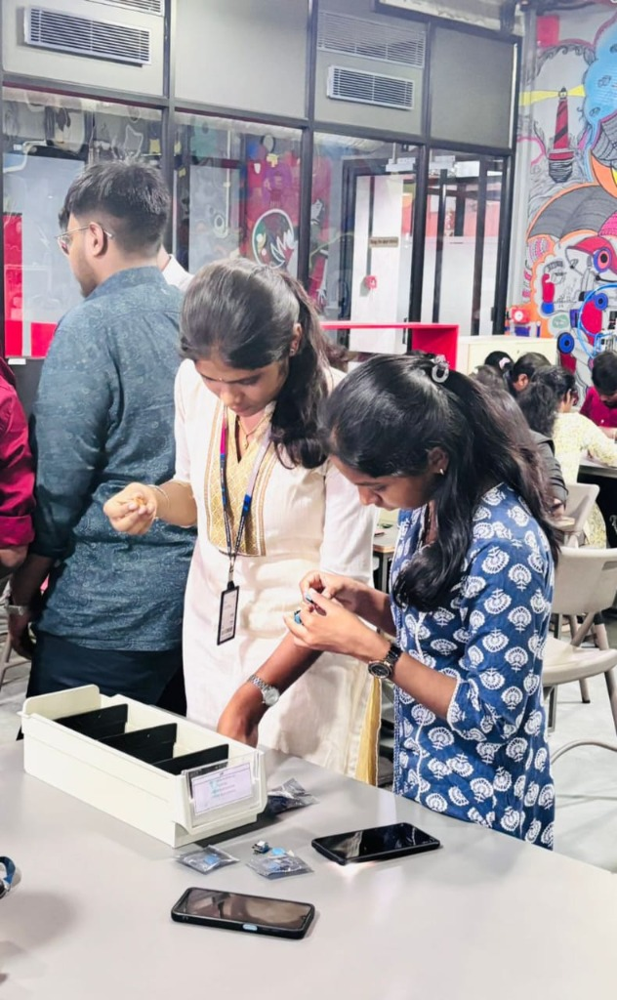
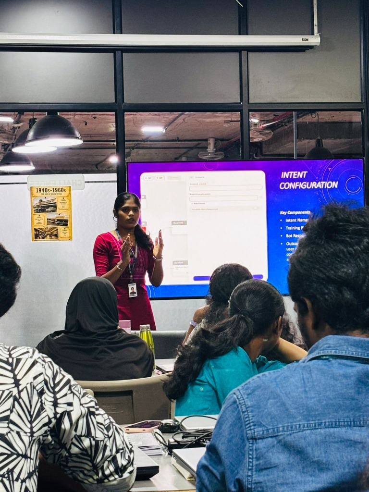
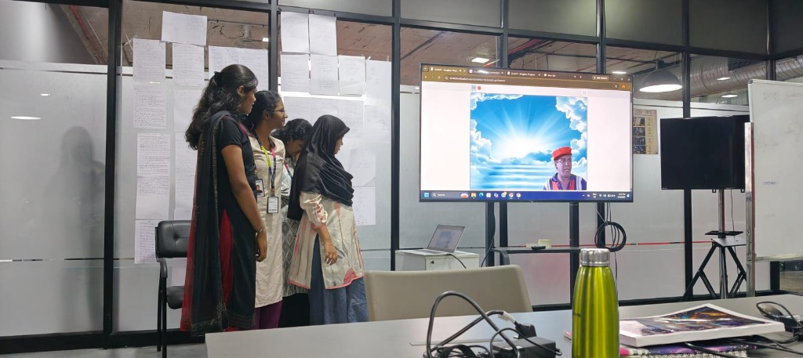

Week 2: 5S Organization, Chatbot Tech, Algorithms & Mobile Development
Japanese 5S Methodology, Chatbot Architecture, Algorithmic Thinking, Meme Creation Sprint, MIT App Inventor & Collaborative Problem-Solving
Week 2 focused on bridging disciplined industrial engineering practices with foundational computing, software architecture, and creative communication. We engaged in multifaceted learning modules ranging from the Japanese 5S workplace organization technique to conversational AI, algorithmic reasoning, rapid visual prototyping, and team-based solution development.
Through interactive workshops, hands-on activities, and collaborative problem-solving challenges, we developed key competencies in organizing technical workspaces, designing chatbot conversational flows, formulating algorithmic problem-solving steps, building mobile applications with MIT App Inventor, and communicating ideas succinctly through the 24-hour meme sprint.
Japanese 5S Workplace Organization Technique
Learned about the Japanese 5S methodology: Sort, Set in Order, Shine, Standardize, and Sustain. Understood how these principles help improve workplace organization, efficiency, cleanliness, and discipline.
In our hands-on workshop session, we put 5S directly into practice by sorting through laboratory and workstation hardware components. We identified essential items, eliminated clutter, categorized components into partitioned storage bins, standardized component labels, and established clean workflows to minimize search time and maintain a high-efficiency prototype bench.

"Hands-on Japanese 5S implementation — sorting, cataloging, and arranging components into partitioned organizer bins for workspace efficiency."
PRICE ProtoSem Lab • Sort & Set in Order (Seiri & Seiton) Activity
Introduction to Chatbot Technology
Explored the fundamentals of chatbot technology, including user interaction, processing inputs, and generating appropriate responses through automated conversations.
We investigated the core building blocks of intelligent dialogue systems: Intent Configuration (mapping what the user intends to achieve), Training Phrases (variations in natural language queries), Entity Extraction (extracting key parameters like product names or dates), and Bot Response Engines (delivering contextual, dynamic answers). We also presented dialogue architectures demonstrating automated customer service workflows.
Identifying user goals and mapping speech patterns to conversational actions.
Feeding diverse input expressions to enhance NLP model accuracy and classification.
Generating contextual, timely, and personalized replies through rule-based or generative flows.

"Presenting chatbot architecture and Intent Configuration — mapping training phrases, intents, and automated conversational responses."
Conversational AI Module • Live Intent Flow Presentation
Understanding Algorithms
Learned how algorithms work and how logical, step-by-step instructions can be used to solve problems systematically.
We explored the core principles of algorithmic problem decomposition: breaking down intricate problems into well-defined sequential operations, deterministic decision branches (if/else conditionals), iterative loops, and modular sub-routines. Emphasized clear algorithmic flowcharts and pseudocode as the bedrock for scalable data science, automation, and software engineering.
One-Day Meme Creation Challenge
Participated in a creative challenge to design a meme within one day. This activity encouraged creative thinking, visual communication, time management, and the ability to express ideas effectively.
Working under tight time constraints, our team used visual media platforms including Scratch block programming and multimedia design tools to build humorous yet insightful narratives. We created, tested, and presented our meme project on screen in front of our cohort, effectively learning how concise visual messaging and storytelling capture audience attention instantly.

"One-Day Meme Creation sprint — pitching our creative Scratch-based visual narrative and presenting storyboard concepts to peers."
Creative Communication Sprint • Scratch Interactive Animation Showcase
Mobile App Development Using MIT App Inventor
Explored MIT App Inventor, a visual programming platform for developing mobile applications. Worked on the concept of creating an application based on our team's assigned problem statement using interface components and block-based programming.
We designed intuitive user interfaces with mobile buttons, text inputs, dynamic lists, and responsive layouts. On the logic side, we configured block-based event listeners, variables, conditional evaluations, and data storage. This rapid mobile development environment enabled our team to translate abstract retail problem statements into testable on-device interactive applications quickly without deep mobile boilerplate overhead.
Event-driven mobile architecture connecting UI sensors, screen transitions, and database logic seamlessly.
Teamwork and Problem-Solving
Participated in problem-solving activities that encouraged brainstorming, collaboration, logical thinking, and the exploration of practical solutions to real-world challenges.
Through group ideation sessions, we debated diverse approaches, mapped user personas, challenged initial assumptions, and unified our team members’ diverse analytical and creative perspectives. This collaborative culture deepened our confidence in working as a synchronized engineering unit tackling complex retail innovation challenges.
Week 2 Activity Photo Gallery
Actual workshop, presentation, and collaborative project photos from Week 2 learning sessions at PRICE ProtoSem.
Japanese 5S Organization
Sorting and setting components in order with partitioned workbench organizers.
Chatbot Technology
Presenting Intent Configuration, training phrases, and automated response design.
Meme Creation Challenge
Pitching rapid visual storytelling and Scratch animations under 24h constraints.
Key Activities & Milestones Summary
Japanese 5S Methodology
Mastered Sort, Set in Order, Shine, Standardize, and Sustain to build clutter-free, efficient, and disciplined engineering workspaces.
Introduction to Chatbots
Explored natural conversation flows, intent classification, training phrase compilation, and automated message handling.
Understanding Algorithms
Learned how systematic, logical step-by-step procedures allow structured problem decomposition and algorithmic execution.
One-Day Meme Challenge
Designed and pitched creative memes within 24 hours, enhancing visual communication, concise messaging, and time management.
MIT App Inventor Prototyping
Built mobile application prototypes addressing our team’s assigned problem statement with visual block programming and UI components.
Teamwork & Problem-Solving
Collaborated in structured brainstorming and analytical sessions to explore practical, validated solutions for real-world scenarios.
Topics & Keywords Covered
PRICE ProtoSem Archive
Explore previous weeks or return to portfolio